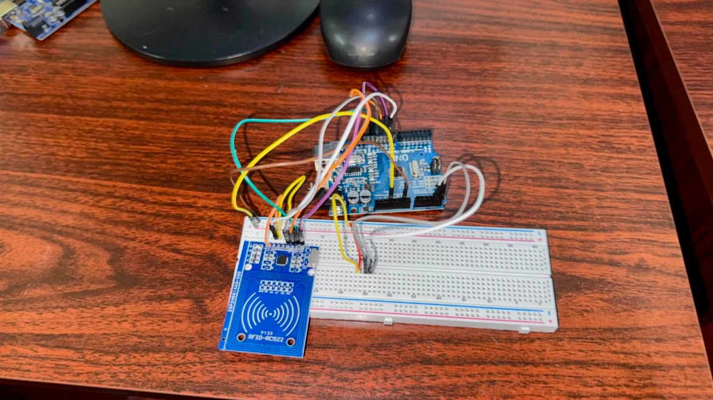
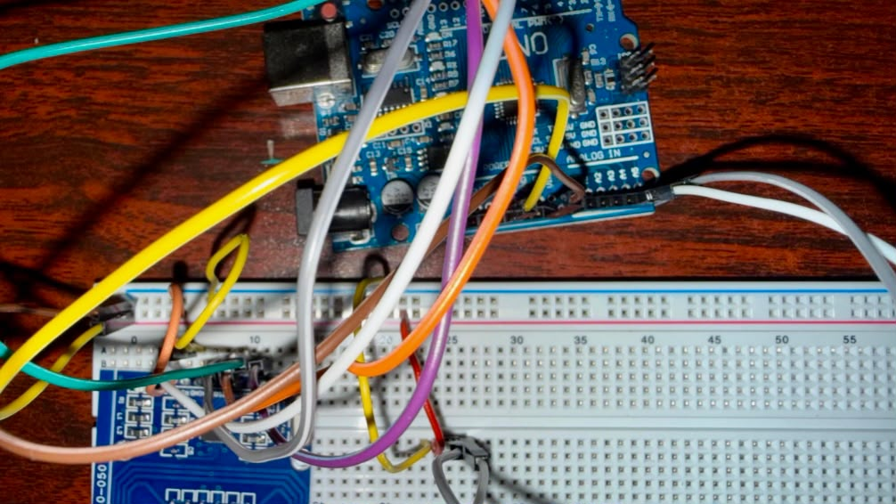
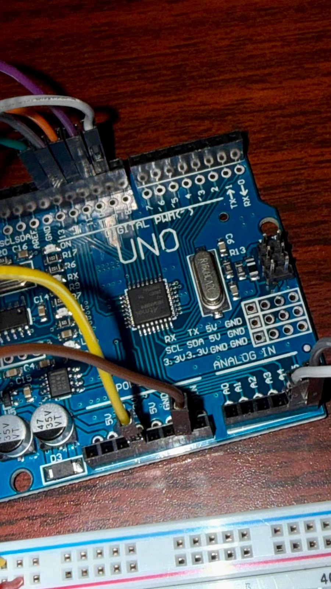

Proyecto enfocado en el diseño y desarrollo de un prototipo de seguridad que utiliza tecnología de identificación por radiofrecuencia RFID como alternativa para el control de acceso.
Conocer el proyectoIntroducción, problemática y justificación
El proyecto consiste en el diseño e implementación de un sistema de seguridad basado en tecnología RFID, cuyo propósito es explorar una alternativa para controlar el acceso a determinadas áreas restringidas. Esta tecnología permite identificar tarjetas o etiquetas mediante radiofrecuencia, sin necesidad de contacto físico directo con el lector.
La propuesta surge ante la necesidad de contar con mecanismos que contribuyan a mejorar la seguridad y el control de ingreso en espacios donde el acceso debe estar limitado. Para ello, se plantea un prototipo educativo que integra componentes electrónicos y elementos de identificación RFID.
En determinados espacios, el control manual del ingreso puede presentar dificultades para identificar y supervisar a las personas que acceden a ellos.
El uso de tecnología RFID permite estudiar una forma de identificación electrónica que puede servir como base para desarrollar sistemas de control de acceso.
Propósitos principales del trabajo
Diseñar e implementar un prototipo de sistema de seguridad con tecnología RFID para estudiar su aplicación en el control de acceso a áreas restringidas.
Elementos considerados para el desarrollo del prototipo
Dispositivo encargado de detectar y leer la información de las tarjetas o etiquetas RFID.
Elementos que contienen información de identificación y que pueden ser reconocidos por el lector.
Permite procesar las instrucciones y coordinar el funcionamiento de los componentes electrónicos.
Elementos utilizados para representar visualmente diferentes estados del prototipo.
Base que facilita el montaje y la conexión de los componentes sin necesidad de soldarlos.
Permiten establecer las conexiones eléctricas entre los diferentes elementos del circuito.
Proceso general de identificación mediante RFID
El usuario acerca una tarjeta RFID al área de lectura del dispositivo.
El lector intenta reconocer la información contenida en la tarjeta mediante radiofrecuencia.
La información recibida debe ser procesada por la unidad de control para determinar el resultado.
El sistema puede utilizar indicadores para comunicar el resultado de la identificación.
Etapas realizadas durante el proyecto
Recopilación de información sobre la tecnología RFID, sus características, aplicaciones y funcionamiento.
Organización de los materiales, planificación del circuito y definición de la estructura del prototipo.
Montaje físico de los componentes y desarrollo de la programación necesaria para el prototipo.
Registro de los componentes, conexiones y aspectos técnicos relacionados con el sistema.
Presentación del prototipo, revisión de las pruebas realizadas y documentación de los resultados obtenidos.
Informes correspondientes a las cinco fases de trabajo
Ejemplo ilustrativo de una respuesta de control de acceso
Selecciona una opción para observar cómo podría responder un sistema de control de acceso.
Esta demostración es únicamente visual y no representa una lectura real del prototipo físico.
Evaluación general del trabajo
Durante el desarrollo del proyecto se logró construir y presentar un prototipo físico basado en tecnología RFID. El proceso permitió aplicar conocimientos relacionados con electrónica, programación, conexiones y funcionamiento de dispositivos de identificación por radiofrecuencia.
Sin embargo, durante las pruebas no se consiguió verificar satisfactoriamente la identificación y autorización de las tarjetas RFID. Por esta razón, el funcionamiento completo del control de acceso queda pendiente de nuevas revisiones y pruebas técnicas.
Como conclusión, el proyecto permitió conocer las posibilidades de aplicación de la tecnología RFID en sistemas de seguridad, así como reconocer la importancia de comprobar cada conexión, revisar la programación y realizar pruebas antes de considerar un sistema completamente funcional.
Integrantes del proyecto de Robótica
Diego Andrés García López
Daniela Fernanda Martínez Ramos
Fabiola Sofía Larios Calles
Tatiana Margarita Arias Ramírez
Ariel Alejandro Vásquez Franco
Imágenes del diseño y desarrollo del prototipo

Diseño del circuito

Conexión de componentes

Prototipo del sistema